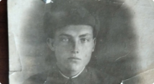
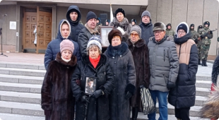

СМИ о нас

Поисковики нашли родственников солдата, пропавшего без вести в 1942г.Поисковики отряда «Факел» из города Киров, работая в ходе осеннего этапа межрегиональной Вахты Памяти «Поисковой экспедиции «Долина», нашли останки семи солдат. Личность одного из них установили по записке из смертного медальона, а позже удалось найти семью погибшего бойца.

«Отец, наш Ромка вернулся». В Красноярске похоронили останки красноармейца
Волнительное мероприятие прошло в День Неизвестного Солдата, 3 декабря, на Мемориале Победы. В Красноярске на Бадалыкском кладбище были захоронены останки красноармейца Феноберцева Романа Филипповича.
В Красноярске захоронили останки погибшего во время ВОВ солдата
В Красноярске захоронили останки солдата, погибшего во время Великой Отечественной войны, призванного на воинскую службу с территории Красноярского края.
Поисковики нашли родственников солдата, пропавшего без вести в 1942г.
Поисковики отряда «Факел» из города Киров, работая в ходе осеннего этапа межрегиональной Вахты Памяти «Поисковой экспедиции «Долина», нашли останки семи солдат. Личность одного из них установили по записке из смертного медальона, а позже удалось найти семью погибшего бойца.
«Отец, наш Ромка вернулся». В Красноярске похоронили останки красноармейца
Волнительное мероприятие прошло в День Неизвестного Солдата, 3 декабря, на Мемориале Победы. В Красноярске на Бадалыкском кладбище были захоронены останки красноармейца Феноберцева Романа Филипповича.
В Красноярске захоронили останки погибшего во время ВОВ солдата
В Красноярске захоронили останки солдата, погибшего во время Великой Отечественной войны, призванного на воинскую службу с территории Красноярского края.